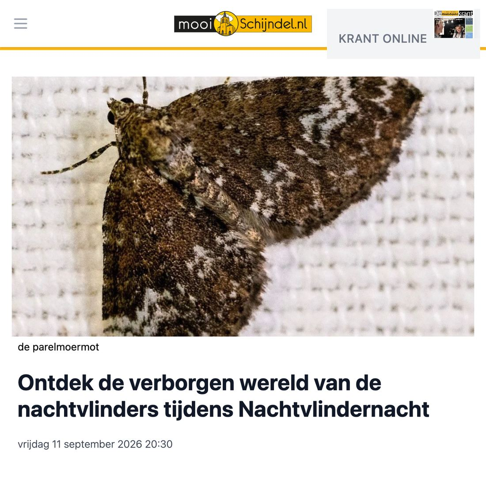
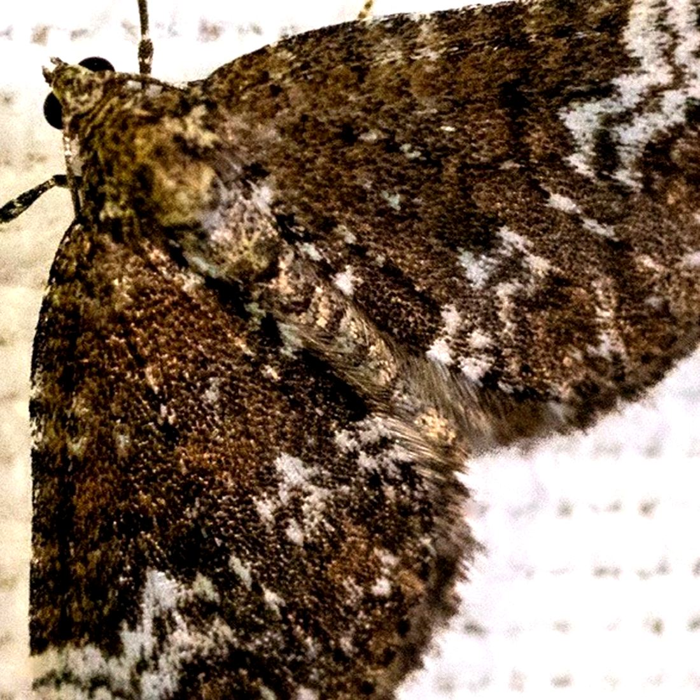

Hennepnetelspanner, geen parelmoermot
3 september 2026 · MooiSchijndel
- Op de foto
- hennepnetelspanner
- Het ging over
- parelmoermot


Dit is geen parelmoermot. Dit is een hennepnetelspanner.
MooiSchijndel kondigt de Nachtvlindernacht in Schijndel aan en zet er een foto bij van een nachtvlinder op een laken. Alleen het onderschrift klopt niet.
Gelukkig komt die nachtvlinderavond nog, MooiSchijndel!